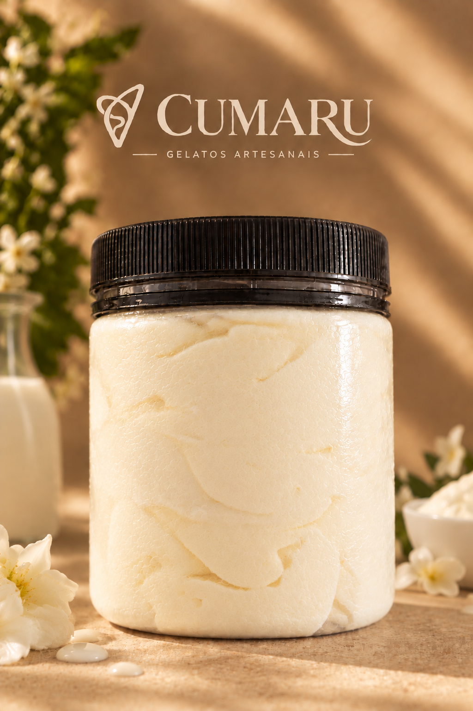
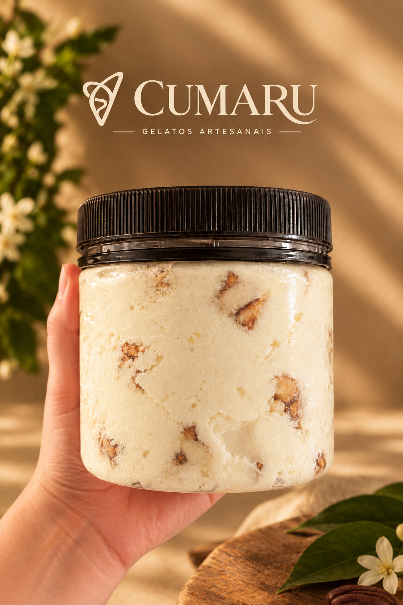
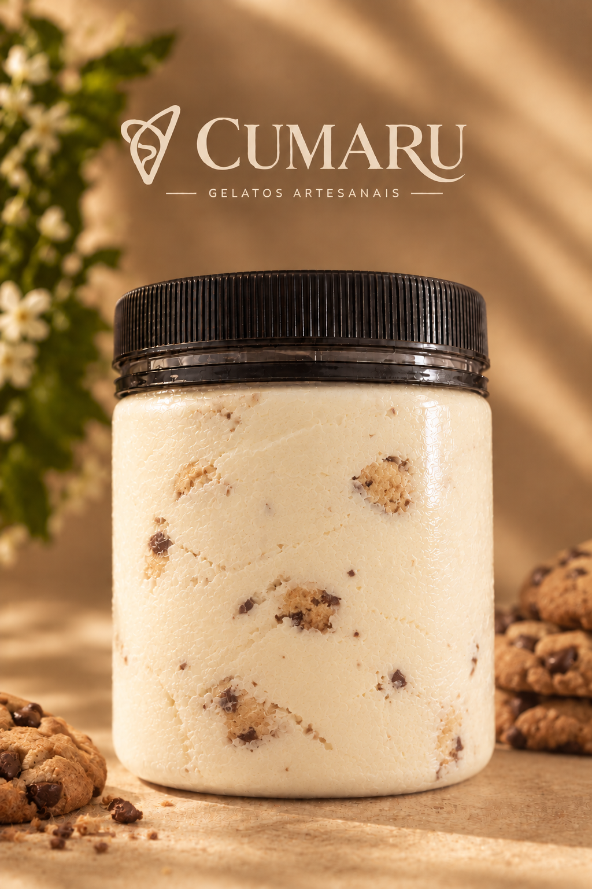

A Cumaru nasceu de uma paixão pelo tradicional gelato italiano.
Nossa história começou com uma necessidade: poder consumir gelatos sem glúten e seguros para pessoas celíacas. Foi essa necessidade que nos levou a estudar, aprender e desenvolver gelatos artesanais, preparados com ingredientes selecionados e receitas tradicionais.
Inspirados pelas tradicionais gelaterias da Itália, buscamos ingredientes de qualidade, frutas frescas e receitas preparadas com cuidado e dedicação. Na Cumaru, acreditamos que um bom gelato começa com ingredientes simples, selecionados e de qualidade.
Hoje, cada sabor da Cumaru carrega um pouco dessa história. Mais do que vender gelatos, queremos proporcionar momentos felizes aos nossos clientes, promovendo uma experiência saborosa, acolhedora e, principalmente, inclusiva para o público celíaco.
Cumaru — tradição, sabor e inclusão em cada gelato.


O encontro de duas maravilhas da natureza brasileira! Nesse sabor a baunilha amazônica encontra a castanha de caju caramelizada.
Ver sabores
Sem glúten mas com muito sabor, como todos os nossos gelatos! A base de baunilha se une em perfeita harmonia com o verdadeiro cookie
Ver sabores